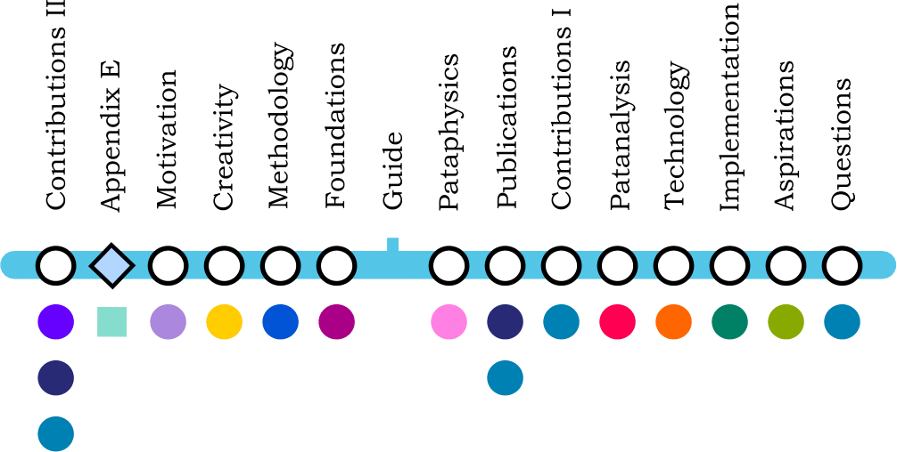
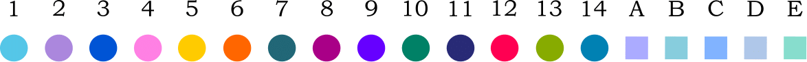
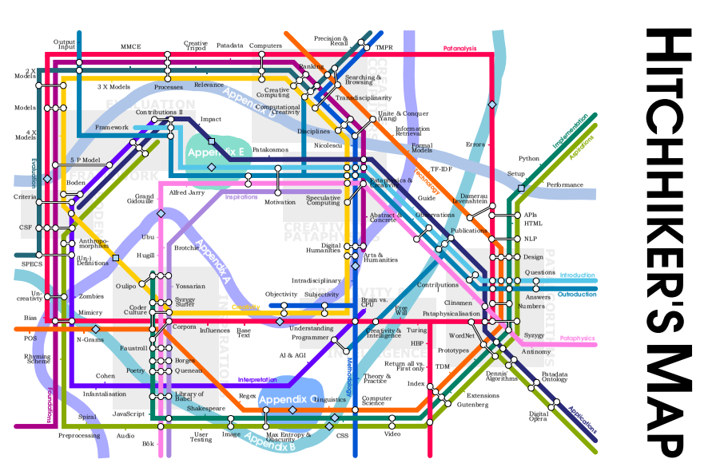

Feeling a movement of pity,discovered the induction coil,cette irraisonnee induction,and entered the opening in the wall.Only by some recherche movement,apres coup et sous forme d’introduction,opening his seized manuscript,the enemy made within the enclosure of the vineyard.Which he had thrown off at the beginning of his labor,in opening so exactly at the,than the thirst of my paternity.We can then start at once,and whose informing voice had consigned me to the hangman,as any person at all conversant with authorship may satisfy himself at.
This thesis describes Algorithmic Meta-Creativity (AMC). In other words it is about using creative computing to achieve computer creativity.
The project is transdisciplinary; it is heavily inspired by the absurd French pseudo-philosophy pataphysics and draws from a wide range of subject areas such as computer science, psychology, linguistics, literature, art and poetry, languages and mathematics.
The research included exploring what it means to be creative as a human, how this translates to machines, how pataphysics relates to creativity and how creativity should be evaluated in machines.
Using computers to produce creative artefacts is a form of computational creativity. Using creative techniques computationally is creative computing. AMC spans the two—whether this is to achieve a creative or non-creative output. It is the use of digital tools (which may not be creative themselves) and the way they are used forms the creative process or product.
Creativity in humans needs to be interpreted differently to machines. Humans and machines differ in many ways, we have different ‘brains/memory’, ‘thinking processes/software’ and ‘bodies/hardware’. Too often creative output by machines is judged as we would a human’s.
Computers which are truly artificially intelligent might be capable of true artificial creativity. Until then they are (philosophical) zombie robots: machines that behave like humans but aren’t conscious. The only alternative is to see any computer creativity as a direct or indirect expression of human creativity using digital means and evaluate it as such. AMC is neither machine creativity nor human creativity—it is both. By acknowledging the undeniable link between computer creativity and its human influence (the machine is just a tool for the human) we enter a new realm of thought. How is AMC defined and evaluated? This thesis addresses this issue.
a practical demonstration of AMC
a theoretical framework to help interpret and evaluate products of AMC
The outcome of step (1) is presented as a website—pata.physics.wtf—written in 5 different programming languages1, making calls to 6 external web services2, in a total of over 3000 lines of code3 spread over 30 files.
The main purpose of the system above is to demonstrate the three creative patalgorithms in the context of exploratory IR. A browsing rather than a search engine, it presents results in various formats such as sonnets and golden spirals. The system partially automates the creative process, generating results on demand, which allows users to focus on their own personal artistic evaluation rather than production.
Immediate inspirations come from fictional character Doctor Faustroll created by French absurdist and ‘father’ of pataphysics Alfred Jarry (1996), the fantastic taxonomy of the Celestial Emporium of Benevolent Knowledge by magical realist Jorge Luis Borges (2000) and A Hundred Thousand Billion Poems by pataphysician and Oulipo co-founder Raymond Queneau (1961), amongst others.
To address step (2) above, I explored the problem of objective evaluation and interpretation of subjective creativity specifically in regards to AMC. I have argued that the most appropriate way to approach this is by looking at five objective constraints (person, process, product, place, purpose) and seven subjective criteria (novelty, value, quality, purpose, spatial, temporal, ephemeral) holistically and by understanding that humour and art ‘lie in the ear and eye of the beholder’.
This resulted in an interpretation framework visualised as an evaluation matrix (5 constraints x 7 criteria) which can be used to qualitatively and/or quantitatively measure the creativity of a given AMC artefact:
a set of scales that can be used to approximate a ‘rating’ for the creative value of an artefact,
a set of criteria to be considered using the scales above,
a combined framework for evaluation.
Computers are binary machines; the world is black and white to them (0 and 1, on and off). Programmers can run abstract high-level commands which are executed in sequence (with fast speeds giving the illusion of multitasking). They are precise, structured, logical, and generally abide by strict standards. Computers can only be creative if they are given clear instructions as to how. IR is generally focused on relevance of results in regards to the query.
The Analytical Engine has no pretensions whatever to originate anything. It can do whatever we know how to order it to perform.
(Ada Lovelace, in Menabrea and Lovelace 1842, her emphasis)
Pataphysics emerged during the Belle Époque4 in France and has either directly or indirectly influenced various artistic movements such as Dada, Symbolism, Surrealism, Oulipo and Absurdist Theatre. Pataphysics is highly subjective and particular, values exceptions, the imaginary and the mutually incompatible.
Creativity is often studied at various levels (neurological, cognitive, and holistic/systemic), from different perspectives (subjective and objective) and characteristics (combinational, exploratory and transformative). It is usually defined in terms of value, originality and skill.
Combining computing with pataphysics seems impossible—although the antinomies below (juxtaposing principles in computing on the left with ideas from pataphysics on the right) highlight just how intriguing a possible combination of the two would be.
Polymorphism (generalisation) opposes particularity.
Precision opposes exceptions and contradictions.
Logic and structure oppose the imaginary and paradox.
Cross-compatibility opposes the mutually exclusive.
Responsiveness opposes the specific.
Relevance opposes the creative.
This apparent dichotomy of computing and pataphysics is alluring. Christian Bök argued that pataphysics “sets the parameters for the contemporary relationship between science and poetry” (2002). Pataphysics suddenly seems like the perfect choice infusing computers (science) with creativity (poetry).
Combining pataphysics with creativity is easier. The ideas of combinatorial, exploratory and transformative creativity map quite nicely onto some pataphysical concepts such as clinamen, syzygy, antinomy and anomaly.
Another motivating factor for this project was the lack of research in the particular area of creative computing in general. The discipline of computational creativity has emerged fairly recently5 from a background in AI. It appears to focus a lot more on the outcome of a product that would be judged creative rather than the actual process. Creative computing focuses on producing creative algorithms which may or may not have creative outputs. This was first addressed in (Raczinski et al. 2013) and later expanded into a definite description of this new discipline (Hugill and Yang 2013).

My personal interest in this project comes from a background in computer science and a longstanding interest in art. Most recently I managed to successfully combine my technical skills with my creative side for a Master of Science degree in Creative Technologies at DMU6.
Research dealing with subjective ideas and concepts like creativity throws up a lot of questions. My intention is to address them all throughout this thesis, although some of them will not have definite binary answers. An attempt to answer them can be found in the conclusion chapter 14.2.
What is the relationship between pataphysics and creativity?
How is computer creativity related to AI?
Should we distinguish between computationally automated or emulated creative processes and the programmer’s input?
How can a machine’s creative output be evaluated?
How can IR be infused with creativity?
This project combines research in science and art making it transdisciplinary.
Literature, Philosophy, Art, Poetry
Cognitive Science, AI, DH
IR, NLP, Web Development
Transdisciplinary, subjective
Creative computing, exploratory, experimental
Artefact, literature synthesis, algorithm design, theoretical framework, critical reflection and analysis, rapid incremental prototyping
The general process of my project was as follows.
Critically analyse and synthesise existing literature,
develop pataphysical algorithms,
design a system to demonstrate algorithms,
develop a website as an artefact,
define an evaluation and interpretation framework,
analyse results.
The key contributions to knowledge described in this thesis are:
Three pataphysical search algorithms (clinamen, syzygy and antinomy).
A creative exploratory search tool demonstrating the algorithms pata.physics.wtf.
A set of 7 subjective criteria and 5 objective constraints for defining creativity.
A combined framework for evaluating and interpreting creativity.
Some chapters (especially and ) in this thesis are based partially on articles published during this project. I have used fragments from those papers freely without specific citations unless clearly indicated. I had several co-authors (Hongji Yang, Andrew Hugill, James Sawle and Dave Everitt) for these pieces and I hereby acknowledge their contributions.
A list of publications can be found in the preface on page vii. Details of talks and exhibitions and copies of the publications can be found in appendix E.
This document is organised into 6 parts which form the main logical structure of the thesis and each part contains several chapters. There are margin notes pointing to relevant chapters, sections, tables, figures or images throughout.
The preface contains the abstract, acknowledgments, and various tables of contents.
Gives a general top-level overview of this research.
Lists the various immediate inspirations for the project.
Explains and justifies the approach taken for the research.
Describes the origins of pataphysics and related concepts.
Lists the theories of human and computer creativity.
Provides the technical background of this research.
Explains the models of evaluation for computer creativity.
Brings together the research on creativity and pataphysics.
Critiques evaluation models and proposes a new approach.
Describes pata.physics.wtf from a technical standpoint.
Showcases two use cases of this research.
Analyses the artefact and some of the theoretical aspects.
Addesses future work and known issues.
Summarises the contributions of this thesis.
The appendix contains additional material that was not suitable for including in the main body of the text. It also contains the list of references.
The different symbols used in margin notes are as follows.
Represents a table.
Represents a figure.
Represents an image.
Represents a snippet of source code.
Represents an equation.
Represents a chapter or section.
Represents a thesis part.
This thesis was written in LaTeX. It was first drafted in March 2015 and completed in December 2016. I created my own ‘style’ based on only a few restrictions imposed by DMU regulations (such as font size and page margins).
The homepage shows a map for this thesis, with one coloured line for each chapter and a river or lake for each appendix. This is directly modeled on the Metro map for Paris; in fact, the condensed Paris metro (RATP 2014) has 14 numbered lines (1–14) and 5 additional alphabetical lines (A–E) which correspond perfectly to the structure of my thesis.
| 1. Introduction | A. Random | ||
| 2. Inspirations | B. Code | ||
| 3. Methodology | C. WordNet | ||
| 4. Pataphysics | D. Git History | ||
| 5. Creativity | E. Publications | ||
| 6. Technology | |||
| 7. Evaluation | Interchange | ||
| 8. Foundations | Harbour | ||
| 9. Interpretations | Station | ||
| 10. Implementation | |||
| 11. Applications | Topic Cluster | ||
| 12. Patanalysis | |||
| 13. Aspirations | |||
| 14. Outroduction |
There is no particular order to stations of a line, i.e. they do not correspond to the order of sections within chapters. Rather, they are more losely based on the content discussed in each chapter. Interchanges indicate where one line overlaps with another line, meaning the content discussed in the relevant chapter is related. Not all interchanges have labels — in this case they just highlight a more general relationship. Practically, most of the stations and intersections directly represent the margin notes presented in the thesis document.
Large clusters of interchanges have been highlighted by topic clusters in light grey with appropriate labels. These clearly show the core themes covered in this thesis.
This cluster contains stations related to the artefact pata.physics.wtf and the pataphysicalisation process (including the pataphysical algorithms).
This cluster is related to the evaluation/interpretation framework developed in chapter 9.
Here, we find stations for disciplines such as creative computing and computational creativity, but also creative search evaluation, browsing, ranking and transdisciplinarity.
This group contains interchanges on topics such as speculative computing and comparisons between pataphysics and creativity.
Here, we have stations on the relationship between AI, computer ethics, and artificial creativity. Turing features heavily in this group, with his famous Turing Test, and Searle with his Chinese Room argument.
This cluster mainly features the various key inspirations for this project, such as the Syzygy Surfer, Jarry’s Faustroll, Borge’s Chinese Encyclopaedia, and Queneau’s Cent Mille Milliards de Poèmes.
This cluster is a reference point to the strong influence by Margaret Boden’s theory of creativity on this thesis, which is used prominently in research on creative computing and computational creativity.
Rivers and lakes represent the appendices.
In addition to the map shown on the homepage there are individual line maps at the end of each chapter. These can be found in sections called by names inspired by a chapter within Jarry’s ‘Faustroll’ novel: From Paris to Paris by Sea (1996). The line maps show the interchanges to other lines, giving a rough overview of which other chapters relate to the content of the current chapter in one way or other. Again, this is not in order of chapter sections and subsections.

The first chapter serves as an introduction to the thesis and as such leads into the most important topics (Pataphysics, Creativity, Technology, Evaluation) and their interplay (see Foundations, Interpretations ). More on the pataphysical algorithms (‘Contributions I’) can be found in chapter (for literary context), (for technical background information) and (for detailed technical descriptions of the algorithms and how they were incorporated into pata.physics.wtf). More details about the evaluation/interpretation framework (‘Contributions II’—including the subjective criteria and objective constraints) can be found in chapter . The transdisciplinary methodology employed in this project is described in chapter , and the key inspirations (Jarry, Borges, Queneau) and others are elaborated in chapter . The chapter goes into an analysis of the various theoretical and practical aspects of this thesis. Appendix shows copies of all published papers in full. These are also summarised in the chapter–section . Potential future work is discussed in chapter and the conclusion chapter (§ ) provides answers to the research questions posed here.


Python, HTML, CSS, Jinja, JavaScript↩︎
Microsoft Translate, WordNet, Bing, Getty, Flickr and YouTube↩︎
2864 lines of code, 489 lines of comments - as of 08 Dec 2015↩︎
1871—1914↩︎
The first International Conferences on Computational Creativity ran in 2010 for example.↩︎
A passive interactive installation, augmenting a live video stream of users with interactive elements using motion tracking algorithms. See msc.fania.eu (Raczinski 2010).↩︎